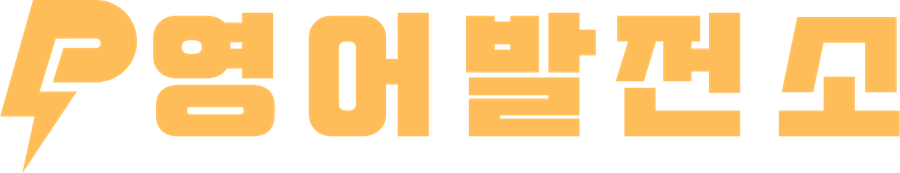

단어발전소
영어발전소 재원생이 쓰는 단어 테스트 앱입니다
학교 교과서와 수업에서 쓰는 단어장 그대로, 시험 볼 범위만 골라 단어를 확인합니다
처음 한 번만 넣으면 다음부터는 묻지 않습니다
이름
전화번호
코드
로그인하기
이름과 전화번호는 이 폰 안에서 되돌릴 수 없는 값으로 바꿔 맞춰만 봅니다.
어디로도 보내지 않고, 그대로 쌓아 두지도 않습니다.
코드를 잊으셨으면 선생님께 문의해 주세요
단어 테스트
☾

출 제 조 건
단어장
·
범위
·
단어 유형
·
테스트 모드
·
문항 수
1
단어장 고르기
불러오는 중…
2
범위와 유형 고르기
단어 유형
메인단어는 교재에 크게 실린 단어, 파생어는 그 단어에서 갈라져 나온 말입니다(happy → happily). 시험 범위가 교재에 실린 단어까지면 「메인단어만」으로 두세요.
메인단어만
표제어만 출제합니다
파생어 포함
메인단어와 파생어를 모두 출제합니다
파생어만
파생어만 골라 출제합니다
범위
번호로
직접 고르기
단어
~
까지
적용
전체
전체 선택
모두 해제
3
테스트 모드
무엇을 쓸지 고릅니다
뜻쓰기 테스트
영어 단어를 잠깐 보여준 뒤 단어를 가립니다. 한글 뜻을 씁니다.
영어쓰기 테스트
한글 뜻을 잠깐 보여준 뒤 뜻을 가립니다. 영어 단어를 씁니다.
아래 두 시간은
실전 테스트
에만 쓰입니다. 연습 모드는 학생이 답을 칠 때까지 기다립니다.
보여주는 시간
초
쓰는 시간(단어 가림)
초
소리 신호
4
문항 수
10
20
30
50
범위 전체
섞어서
순서를 무작위로 바꿉니다
교재 순서대로
단어장에 실린 순서를 지킵니다
연습 결과
0
/
0
이름 ______________ 날짜 ______________
틀린 단어만 다시
한 번 더
결과 인쇄
단어장 고르기
정답표
이름 ______________ 점수 ______ /
날짜 ______________
0 / 0
채점 지우기
틀린 단어만 다시 보기
정답표 인쇄
틀린 단어 내려받기
새 테스트
번호
영어
한글 뜻
범위
틀림
단어장을 고르면 시작할 수 있습니다.
테스트를 보는 동안에는 다른 앱·사전·번역을 쓸 수 없습니다. 넘어가면 그 문제는 틀린 것으로 넘어가고, 결과에 남습니다.
연습 모드
실전 테스트
연습 모드
— 폰에 답을 치면 바로 채점합니다
실전 테스트
— 종이에 쓰고, 끝나고 정답을 봅니다
1
/
30
✕
word
뜻을 적고 엔터
넘기기
확인
1
/
30
II
▶
✕
일시정지
스페이스 일시정지 · → 바로 다음 · Esc 종료
!
다른 앱으로 넘어가려고 했습니다
시험 볼 때는 다른 앱을 쓸 수 없어.
이 문제는 틀린 걸로 넘어갔고, 결과 화면에 남아.
전화나 알림 때문이었으면 선생님께 말하면 돼.
이어서 풀기